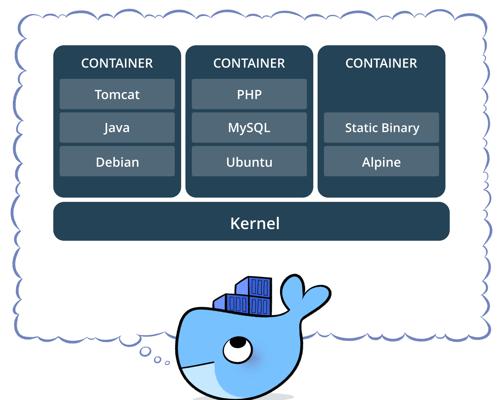

Docker Notes and Useful Things
3 Apr 2017
Definitions

- Container: A container is a runtime instance of an image—what the image becomes in memory when actually executed. It runs completely isolated from the host environment by default, only accessing host files and ports if configured to do so. Containers run apps natively on the host machine’s kernel. They have better performance characteristics than virtual machines that only get virtual access to host resources through a hypervisor. Containers can get native access, each one running in a discrete process, taking no more memory than any other executable.
- Image: An image is a lightweight, stand-alone, executable package that includes everything needed to run a piece of software, including the code, a runtime, libraries, environment variables, and config files. Available for both Linux and Windows based apps, containerized software will always run the same, regardless of the environment.
Scripts
You are probably already logged into Docker Cloud, but if not: docker login.
Unfortunately docker is a nightmare of commands and hidden things you have to pry out with a crowbar. Here are some scripts I have used. They are helpful but not all powerful … YMMV.
Build
#!/bin/bash
#
# docker build -t rpi --squash .
# -t tag name
# --squash get rid of intermediate builds (RUN) and make as small as possible
docker build -t rpi --squash .Cean Up
#!/bin/bash
#docker images | egrep "^<none>" | awk '{print $3}' | xargs docker rmi -f
# docker container rm $(docker container ls -a -q)
echo "*** Prune system, containers, images, and volumes ***"
docker system prune -a -f
docker images prune -a
docker volume prune -f
docker container prune -f
# docker rmi $(docker ps -q)
docker rmi $(docker images -a -q)
echo "*** Done ***"
echo ""
echo "*** List All Images ***"
docker images -aRun
#!/bin/bash
#
# docker run -ti -p 8888:8888 -v `pwd`/notebooks:/notebooks rpi /bin/bash
# -ti is interactive
# -p opens ports <real machine>:<container>
# -v mounts real machines file system <real machine>:<container>, note,
# it has to be a complete full path
# rpi is the tag name
# /bin/bash tells it to run bash
docker run -ti -p 8888:8888 -v `pwd`/notebooks:/notebooks rpi /bin/bashPush Image
#!/bin/bash
if [[ $# -eq 0 ]]; then
echo "Please give a version number\n Ex: ./push-docker.sh 1.2.3\n"
fi
VER=$1
docker tag rpi walchko/rpi:${VER}
docker push walchko/rpi:${VER}
# print some stuff
docker history --human rpi:${VER}Test
Download and run an image, but nothing is kept on your machine: docker run -ti --rm debian:stretch /bin/bash
Run
From the command line: jupyter notebook --allow-root --no-browser
Misc
- List containers:
docker container ls - Stop container:
docker container stop <id> - List images:
docker images - Tag image:
docker tag rpi walchko/rpi:1.2.3 - Publish image:
docker push walchko/rpi:1.2.3 - Run image from anywhere:
docker run -p 8888:8888 walchko/rpi:latest
Slimming
How big is everything? Use the history command:
kevin@dalek ~ $ docker history rpi
IMAGE CREATED CREATED BY SIZE COMMENT
4ba21dd216ea 41 minutes ago /bin/sh -c #(nop) CMD ["jupyter" "notebook"… 0B
6b905d51e97e 41 minutes ago /bin/sh -c #(nop) EXPOSE 8888 0B
109da496f313 41 minutes ago /bin/sh -c #(nop) WORKDIR /notebooks 0B
b8d04ffd15c5 41 minutes ago /bin/sh -c #(nop) VOLUME [/notebooks] 0B
69561c4bb3bb 41 minutes ago /bin/sh -c DEBIAN_FRONTEND=noninteractive ./… 5.4GB
5064a55ce1fd About an hour ago /bin/sh -c #(nop) ADD file:51db87644bb0b2df8… 3.44kB
35e68d676796 About an hour ago /bin/sh -c #(nop) WORKDIR /root/tmp 0B
566fe9d7dc2d About an hour ago /bin/sh -c mkdir -p -m 700 /root/.jupyter/ &… 23B
9aa685e06a73 About an hour ago /bin/sh -c apt-get update -qq && DEBIAN_… 0B
a70238ae7b87 About an hour ago /bin/sh -c #(nop) ADD file:5a181f9c9bb1c6a5e… 1.77kB
c20f7490e1c1 About an hour ago /bin/sh -c pip2 --no-cache-dir install jupyt… 379MB
4d3f8dc130c9 About an hour ago /bin/sh -c curl -O https://bootstrap.pypa.io… 46MB
da40e66ce497 About an hour ago /bin/sh -c apt-get update -qq && DEBIAN_… 829MB
64aa3aeb4cf3 About an hour ago /bin/sh -c #(nop) ENV PYTHONIOENCODING=UTF-8 0B
0e73c47f2cc5 About an hour ago /bin/sh -c #(nop) ENV LC_ALL=en_US.UTF-8 0B
03f78ca55e00 About an hour ago /bin/sh -c #(nop) ENV LANG=en_US.UTF-8 0B
b79808c7b7d5 About an hour ago /bin/sh -c #(nop) ENV LANGUAGE=en_US.UTF-8 0B
da653cee0545 6 weeks ago /bin/sh -c #(nop) CMD ["bash"] 0B
<missing> 6 weeks ago /bin/sh -c #(nop) ADD file:eb2519421c9794ccc… 100MBDocker Cheat Sheet
| Command | Description |
|---|---|
docker build -t friendlyhello . |
Create image using this directory’s Dockerfile |
docker run -p 4000:80 friendlyhello |
Run “friendlyname” mapping port 4000 to 80 |
docker run -d -p 4000:80 friendlyhello |
Same thing, but in detached mode |
docker container ls |
List all running containers |
docker container ls -a |
List all containers, even those not running |
docker container stop <hash> |
Gracefully stop the specified container |
docker container kill <hash> |
Force shutdown of the specified container |
docker container rm <hash> |
Remove specified container from this machine |
docker container rm $(docker container ls -a -q) |
Remove all containers |
docker image ls -a |
List all images on this machine |
docker image rm <image id> |
Remove specified image from this machine |
docker image rm $(docker image ls -a -q) |
Remove all images from this machine |
docker login |
Log in this CLI session using your Docker credentials |
docker tag <image> username/repository:tag |
Tag |
docker push username/repository:tag |
Upload tagged image to registry |
docker run username/repository:tag |
Run image from a registry |